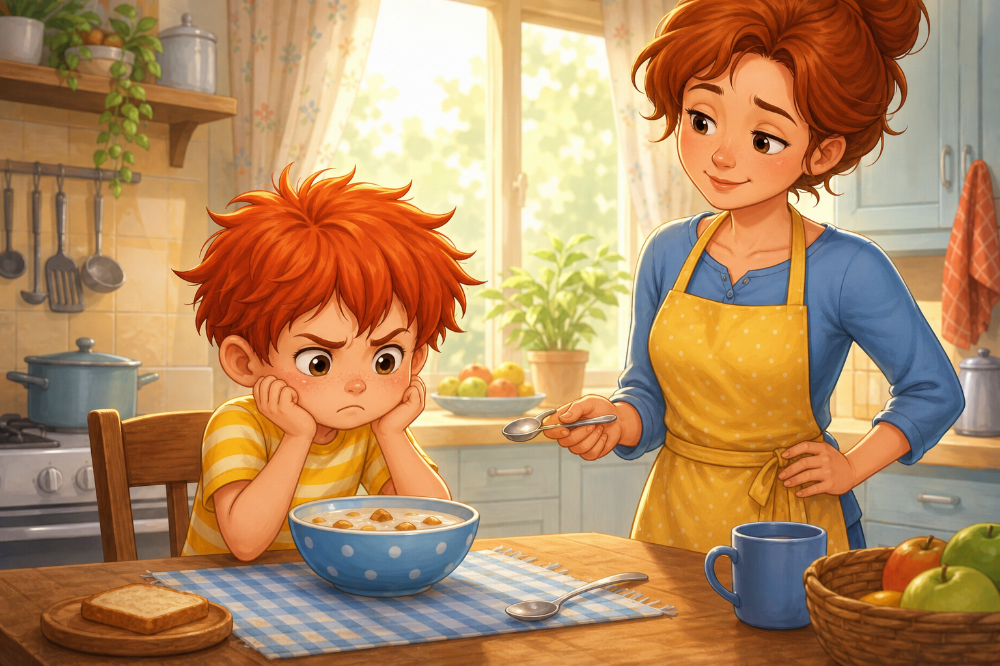
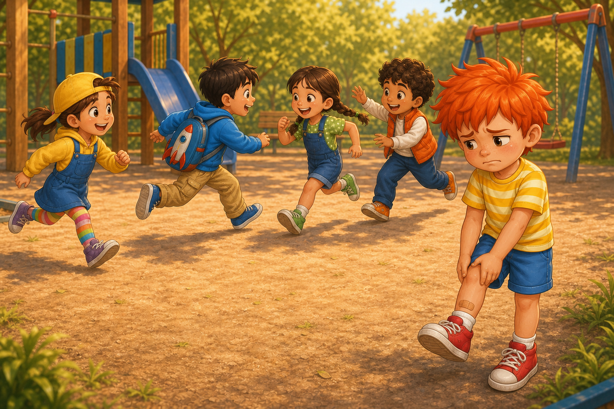
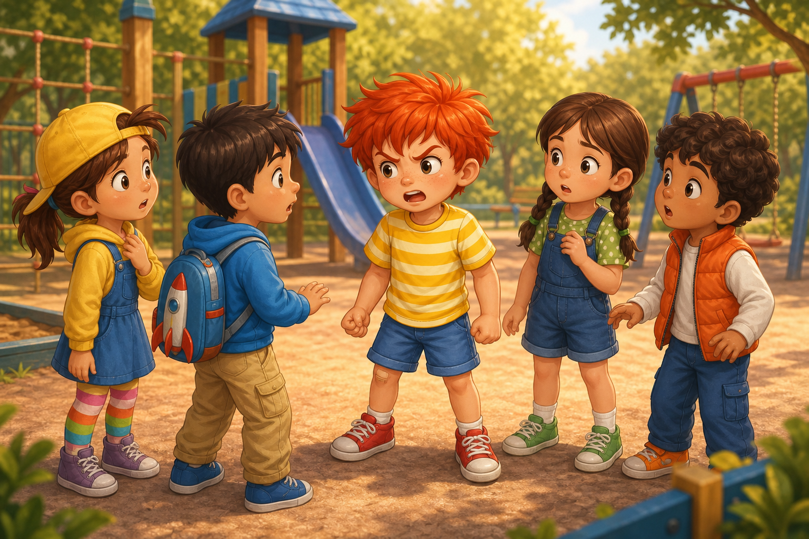
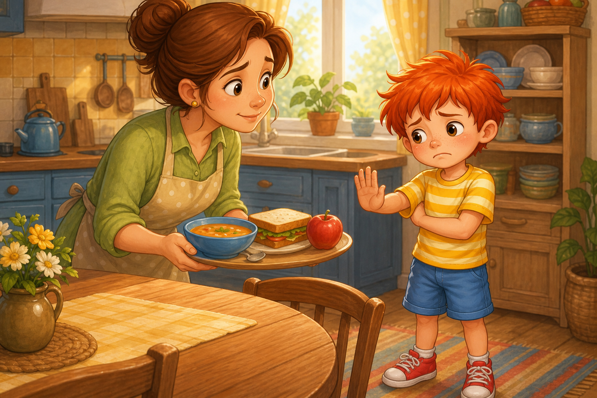
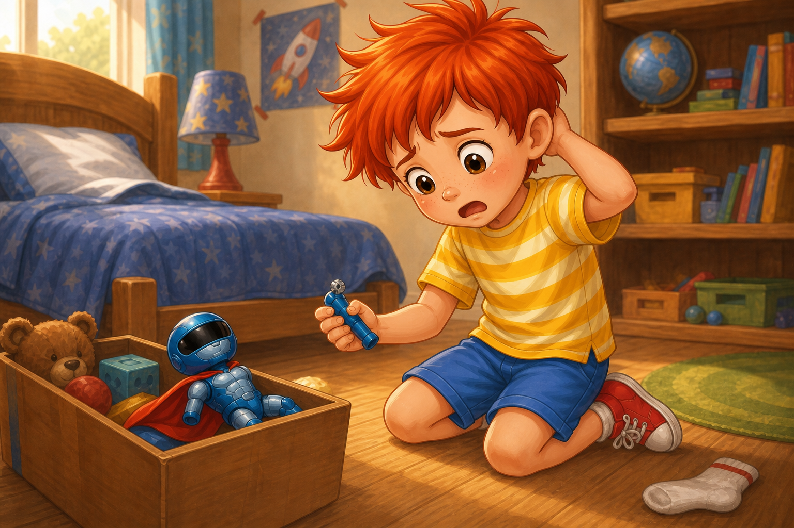
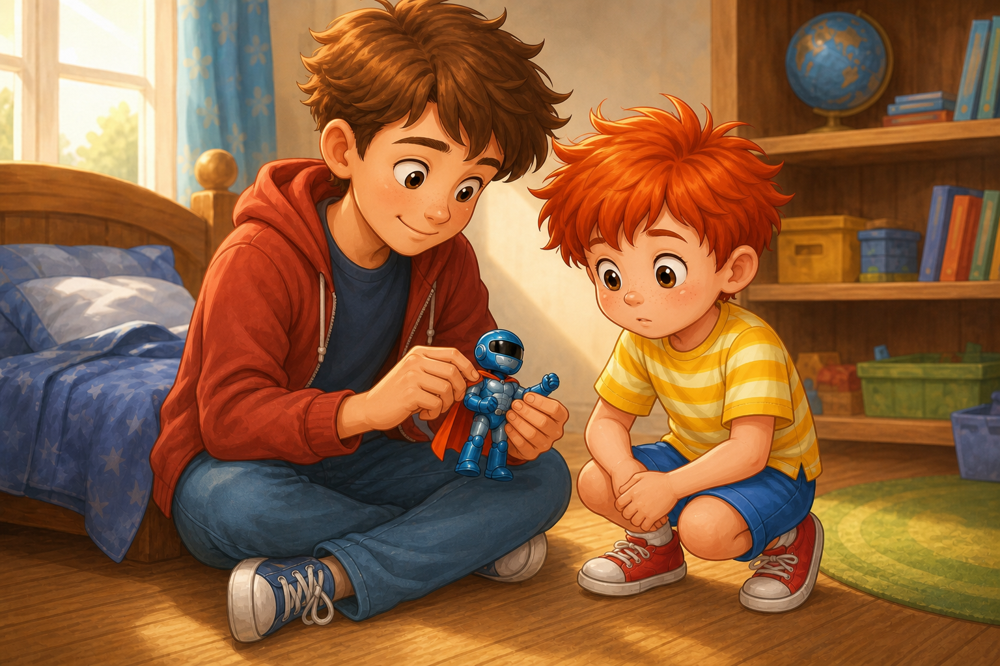
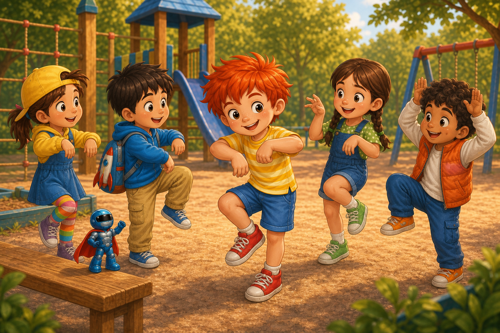

Палавко има лош ден
Сутринта започна накриво още преди Палавко да си отвори добре очите.
Навън слънцето беше решило да бъде весело. То се промъкваше през пердетата на тънки златни ивици, галеше килима и светеше точно върху носа на Палавко, сякаш му казваше: Ставай, денят е чудесен!
Само че Палавко изобщо не беше съгласен.
Първо изчезна чорапът му. Не и двата чорапа, разбира се. Това би било прекалено просто. Изчезна само единият. Другият стоеше върху леглото, свит на топка, и изглеждаше много невинен.
- Къде е брат ти? - попита го Палавко.
Чорапът не отговори. Чорапите обикновено мълчат, когато имат вина.
Палавко надникна под завивката, зад възглавницата, в кутията с кубчетата и дори в една обувка, която отдавна не носеше. Накрая намери чорапа под леглото, залепнал за едно забравено листче с рисунка. Когато го издърпа, листчето се скъса.
- Чудесно - измърмори Палавко. - Просто чудесно начало.
После стъпи на нещо твърдо.
Хряс!
- Ау! - извика той и подскочи на един крак.
На пода лежеше Блицко, новият му син супергерой. Пелерината му беше леко намачкана, а едната му ръка стоеше в странна поза, сякаш току-що беше поздравила тавана и беше забравила да се върне.
Палавко го вдигна набързо.

- Нищо ти няма, нали? - прошепна той.
Блицко изглеждаше все още смел. Поне шлемът му изглеждаше смел. Палавко го остави до кутията с играчките, но не вътре. После забрави за него, защото от кухнята се чу:
- Закуската е готова!
Когато Палавко влезе в кухнята, на масата го чакаше купичка.
В купичката имаше попара.
Не каква да е попара, а попара с бучки, които плуваха в млякото като малки острови, на които никой не би искал да отиде на почивка.
Палавко спря на прага.
- Това ли е закуската?
Майка му, която вече беше сложила лъжичка до купичката, се обърна спокойно.
- Да. Топла е. Хапни, преди да изстине.
Палавко се намръщи така, че веждите му почти се хванаха за ръце.
- Но аз не обичам попара.
- Знам, че не ти е любимата - каза мама. - Но днес това имаме. Ще ти даде сили.
- Защо не ме попита какво искам? - избухна Палавко. - Все едно аз нямам никакво мнение!
Майка му не повиши тон. Само остави лъжичката и го погледна уморено, но меко.
- Имаш мнение. И можеш да ми го кажеш спокойно.
- Не искам спокойно! - каза Палавко.

Още щом го каза, разбра колко странно звучи. Но думите вече бяха изскочили и стояха между него и мама като разсипани кубчета.
- Добре - каза тя. - Остави купичката. Когато огладнееш, ще поговорим пак.
Палавко излезе от кухнята с много важна крачка. Такава крачка правят хората, които са сигурни, че светът е сбъркал и трябва веднага да им се извини.
Само че крачето още го наболяваше от стъпването върху Блицко, стомахът му вече започваше да ръмжи, а денят продължаваше да се държи така, сякаш изобщо не разбира колко е лош.
Навън времето беше слънчево. Това също подразни Палавко. Щом неговото настроение беше облачно, денят поне можеше да има приличието да не грее толкова весело.
На площадката вече имаше деца.
Мина с жълтата шапка тичаше между люлките и се смееше така, че смехът й подскачаше по въздуха. Калоян беше с раница във формата на ракета и обясняваше правилата на някаква игра. Яна, със зелените си маратонки, броеше до десет много сериозно, сякаш беше съдия на голям турнир. А Борко, който имаше две трапчинки и умееше да измисля гласове за всичко, стоеше до пързалката и викаше:
- Който е хванат, става гонещ!
- Палавко! - извика Мина. - Идвай! Играем на гоненица!

Палавко погледна как всички хукнаха в различни посоки.
Крачето го бодна.
Стомахът му изръмжа.
А настроението му, което и без това беше намръщено, сложи още една намръщена шапка.
- Не искам гоненица - каза той.
Калоян спря.
- Ама вече започнахме.
- Е, и? - отвърна Палавко. - Може да играем на нещо друго.
- На какво? - попита Яна.
Палавко не беше измислил. Но това не му попречи да се сърди.
- На нещо по-хубаво.
Борко направи гласа на много важен професор:
- Господин Палавко, моля уточнете хубавото нещо!
Децата се засмяха.
Палавко не се засмя.
На него му се стори, че се смеят на него. А когато човек е гладен, с наболяващо краче и ядосан на попара, дори обикновеното хихикане може да прозвучи като огромна подигравка.
- Много сте смешни! - каза той остро.

Мина премигна.
- Ние просто играем.
- Не, вие просто не ме питате какво искам! - извика Палавко.
Калоян се почеса по носа.
- Питаме те. Ти каза нещо по-хубаво, но не каза какво.
- Защото не ми давате време!
- Дадохме ти - каза Яна.
- Не сте ми дали правилното време!
Това вече обърка всички.
Борко спря да прави смешни гласове. Мина прибра ръце в джобовете си. Калоян погледна към Яна, а Яна погледна към Палавко така, сякаш се опитваше да разбере дали той е ядосан на тях, на играта или на целия свят.
- Палавко - каза Борко тихо, - ядосан ли си ни?
- Да! Не! Не знам! - каза Палавко. - И изобщо си отивам вкъщи.
- Но ти току-що дойде - каза Мина.
- И вече си тръгвам! - отсече Палавко. - И без това съм гладен.
Той се обърна и тръгна към къщи. Вървеше бавно, защото крачето го наболяваше, но се стараеше да изглежда много решителен. Понякога човек може да куца съвсем малко и пак да се опитва да изглежда като буря.
Когато се прибра, мама беше в кухнята.
- Огладня ли? - попита тя.
- Да.
- Искаш ли да стопля супа?
Палавко си представи супата. После попарата. После как всичко в кухнята е виновно.
- Не.
- Сандвич?
- Не.
- Ябълка?
- Не.
Мама въздъхна.
- Палавко, не мога да позная какво искаш, ако всичко е не.
- Аз също не знам! - каза той.

И това го ядоса още повече, защото беше вярно.
Отиде в стаята си и отвори кутията с играчките. Искаше поне Блицко да го разбере. Новите герои би трябвало да разбират важни неща като лоши дни, глад и несправедливи попари.
Но щом вдигна Блицко, Палавко замръзна.
Ръката на Блицко висеше накриво.
Не леко накриво. Истински накриво.
- Какво?! - извика Палавко. - Кой го е направил?
Огледа стаята. Леглото изглеждаше подозрително. Чорапът също. Кутията с кубчета се правеше на невинна, което я правеше още по-подозрителна.
- Някой е счупил Блицко! - извика Палавко.

В стаята надникна батко му.
Баткото на Палавко се казваше Дани. Беше по-голям, по-висок и имаше онзи спокоен вид на човек, който вече е преживял много тежки неща, като домашни по математика и изгубени флумастери.
- Какво става?
- Блицко е счупен! Някой му е счупил ръката!
Дани влезе и седна на пода.
- Може ли да го видя?
Палавко му подаде играчката с лице, което казваше: Внимавай, това е важна трагедия.
Дани разгледа Блицко внимателно.
- Май ръката е изкочила от малката сглобка. Може да се поправи.
- Но кой го направи?
Дани погледна към пода. Там имаше малка следа от колелцето на играчката и драскотина до леглото.
- Тази сутрин май го настъпи.
Палавко отвори уста.
После я затвори.
После пак я отвори, но от нея не излезе нищо.
Споменът се върна бавно: изгубеният чорап, хрясването, Блицко на пода, неговото бързо Нищо ти няма, нали?, после бързането към кухнята.
- Аз ли? - прошепна той.
- Може да се случи - каза Дани. - Особено в лош ден.
- Това е най-лошият ден.
Дани се усмихна леко.
- И аз съм имал такъв.
Палавко го погледна подозрително.
- Ти?
- Аз. Като бях малък, един ден всичко ми вървеше наопаки. Закуската беше грис, а аз мразех грис. После се скарах с приятелите си, защото те искаха футбол, а аз не. После обвиних котката, че ми е скъсала рисунката.
- И котката ли беше виновна?
- Не. Аз я бях настъпил с раницата, докато бързах.
Палавко седна до него.
- И какво направи?
Дани завъртя ръката на Блицко внимателно.
Щрак.
Ръката си застана на мястото.
- Първо поправих каквото можех. После казах извинявай на когото трябваше. И после си казах: денят може да е започнал лошо, но аз не съм длъжен да го довърша лошо.
Палавко погледна Блицко. Синият герой отново изглеждаше цял. Малък, смел и малко уморен от сутрешните премеждия.
- А ако пак се ядосам? - попита Палавко.
- Ще се ядосаш - каза Дани. - Всички се ядосваме. Въпросът е кой държи кормилото - ядът или ти.
Палавко си представи как ядът кара малка кола вътре в главата му и натиска клаксона без причина.
Не му хареса.
- Мисля, че трябва да се върна на площадката - каза той.
- Добра идея.
- И да кажа извинявай.
- Още по-добра.
- И може би после да ям.
- Това вече е геройска мисъл - каза Дани.

Палавко грабна Блицко и излезе навън. Крачето още го наболяваше, но вече не му се струваше, че целият свят го настъпва.
На площадката децата бяха спрели гоненицата. Мина седеше на люлката. Калоян чертаеше нещо в пясъка с пръчка. Яна подреждаше камъчета, а Борко караше една клонка да говори с гласа на стар професор.
Палавко пристъпи към тях.
- Здравейте.
Четиримата го погледнаха.
- Върна ли се? - попита Мина.
- Да. Аз... май се държах лошо.
Калоян сви рамене.
- Малко.
Яна вдигна вежда.
- Повече от малко.
Борко прошепна с професорския глас:
- Научно казано, беше буря с обувки.
Палавко почти се разсърди пак.
Почти.
Усети как малката кола на яда в главата му търси клаксона. Той си пое въздух.
- Съжалявам - каза. - Не ми беше добре. Бях гладен, крачето ме болеше и се ядосах за закуската. Но не беше ваша вина.
Мина се усмихна.
- Добре. Искаш ли пак да играем?
Палавко кимна.
- Може да играем на гоненица.
Калоян се изправи.
- Всъщност, щом ти се върна, може ти да предложиш игра. Нали искаше нещо друго?
Палавко се изненада.
- Ама вие искахте гоненица.
- Искахме - каза Яна. - Но искаме и да сме приятели.
- Можем да измислим гоненица, в която не трябва да тичаш много - предложи Мина. - Например Замръзнали роботи.
Очите на Палавко светнаха.
- С Блицко?
- С Блицко - каза Борко. - Аз ще бъда професорът, който поправя роботите!
Калоян вече започна да измисля правила.
- Който бъде докоснат, замръзва като робот. Друг може да го размрази, като каже щрак-блиц.
- Не, не така! - започна Палавко. - По-добре...
Децата го погледнаха.
Палавко спря.
Ето го пак. Замалко.
Той погали шлема на Блицко.
- Всъщност... може и така. Може да играем на каквото и да е. Само да сме приятели.
Мина плесна с ръце.
- Тогава започваме!
Яна брои до десет. Калоян подреди правилата. Борко направи професорския глас толкова смешен, че дори Палавко се засмя.

Палавко не тичаше много. Крачето му още беше уморено. Но той можеше да бъде главен робот, който се движи бавно и важно. Блицко стоеше на пейката и наблюдаваше мисията с поправена ръка.
Слънцето грееше по същия начин, както сутринта.
Само че сега денят вече не изглеждаше толкова лош.
Когато се прибра, Палавко влезе в кухнята.
- Мамо?
- Да?
- Извинявай за сутринта.
Мама го прегърна.
- Благодаря ти, че ми го каза.
- Може ли сандвич?
Мама се усмихна.
- Може.
Палавко седна на масата, Блицко до него, и си помисли, че понякога лошият ден не се оправя изведнъж. Но може да се поправя на малки части: едно извинявай, една добра игра, една поправена ръка и един сандвич.
И така Палавко разбра, че лошите дни идват при всички. Понякога започват с изгубен чорап, продължават с попара и се опитват да те убедят, че всички са срещу теб.
Но ако спреш, поемеш въздух и признаеш къде си сбъркал, денят може да завие в друга посока.
Не винаги става веднага.
Но става.